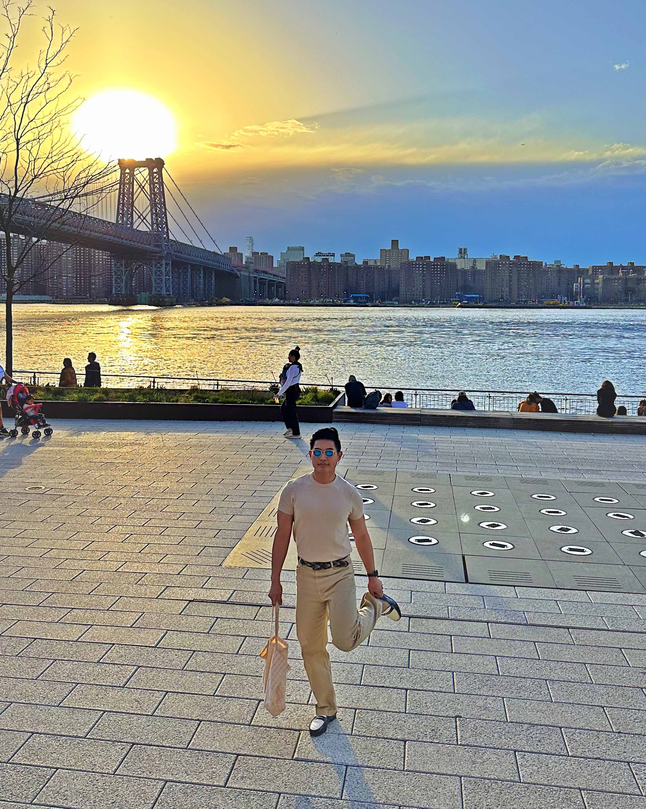

I choose to be a web developer simply because I love seeing my imagination come to life. When I was 15, I started building simple websites in geocities and tinkering CSS in multiply. I loved looking at beautiful websites and imagine how I can recreate it as my inspired version.
After eight years of working as a computer systems analyst in Silicon Valley and a year of learning data science, AWS architecture and mobile development, I've come to realize that frontend web development is still my passion. I've recently upgraded my JS, HTML & CSS development skills with Scrimba, learned React, custom hooks and reusable & styled components. I'm excited to create more React projects and start a software development career with it.
New York City is home
The view of Lower Manhattan during a sunset is spectacular.

Domino Park in Williamsburg, Brooklyn
I love the scene, the vibe and the availability of almost ALL of the world's cuisine. You'll never get bored of exploring the boroughs as every corner of New York City has its own rich history.
About Me
Hi my name is Gian Carlo Torres, you can call me Gian. I am based in Brooklyn, in New York and have been pursuing a career in frontend engineering for more than two years now.
I’ve decided to join this bootcamp, so I’d be able to focus on this career change full-time. Before the pandemic hit, I was a computer systems analyst in the South Bay Area, and realized it was not something that I want to do. I moved to NYC with my partner and completed various self-paced certifications including Python for Data Analysts, React Native Mobile Development and even a Solutions Architect Associate from Amazon Web Services - my goals were a little scattered LOL. My most recent certification is Frontend Web Development. I finally decided to pursue a career out of it because I fell in love with React. I still would consider my current portfolio as “not good enough” and a prospective senior software engineer harshly described it as “pedestrian”, so I believe I need more experience and that’s why I’ve enrolled on this bootcamp program. Outside of my career, I love working out, hiking in the outdoors, traveling to other continents, mixing cocktails and trying out new recipes. I am an outside hitter for my indoor volleyball team, as well!